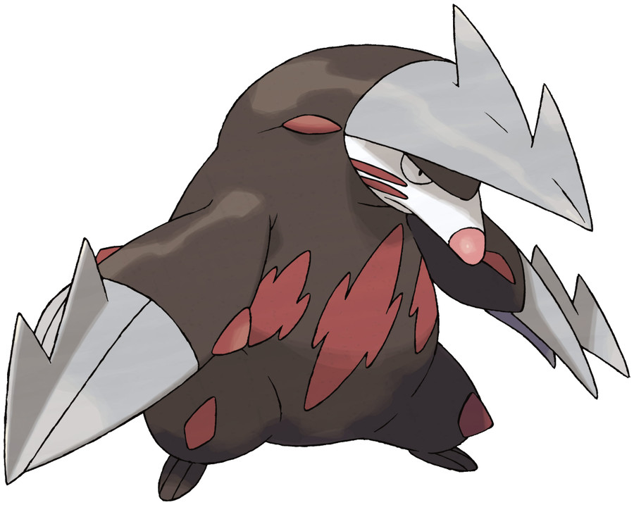
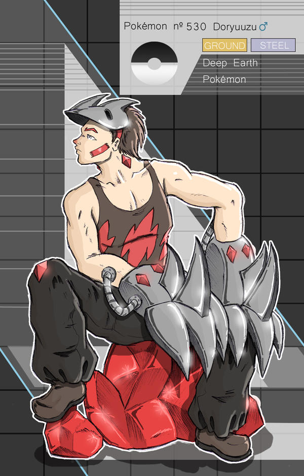

Mason Silt
Personality: Mason is hard-working and ingenious. Due to his previous job being a miner, he is very good at the camaraderie and is usually the solid rock of the team. Also due to his previous job, Mason often believes that problems can be easily solved with brute force which can work on occasions but mostly end in more problems. Mason is the “dad friend” alongside Avery and both of them are often the ones to hype up their teammates and inspire them to keep moving forward.
Age: 19
Gender: Male
Eye Color: Hazel
Hair Color: Blonde
Skin Color: Caucasian
Hometown: Driftveil City
Home Region: Unova
Trivia:
Mason barely washes his hair or face and thinks the dirt exhibits character.
Mason’s favorite food is any type of snack cake, and he is often seen with a couple in his pocket.
In his previous job, Mason worked under Clay, the Driftveil City Gym Leader, and even was a trainer in his gym for a couple of years.
Even without using Burst, Mason can dig especially quickly, even without any equipment.
Although he spends most of his time under the ground, Mason is terrified of Bug-types. This creates a conflict between him and his fellow teammate, Ivo, who uses this information to mess around with Mason as much as he possibly can.
Pokémon:

Excadrill♂
Ground/Steel
Ability: Sand Rush
During a sandstorm, the Speed stat is doubled.
Personality: Excadrill is reckless and more gullible than hard-headed as he tends to make attachments to pretty much anyone whom he thinks is nice or is the strongest (this was proven when he met Mason). Excadrill has shown himself to be a gentle giant, getting easily scared and thinking most people are his friends.
MOVES:
Metal Claw (Steel)
Both of Excadrill's claws flash white and then turn into iron. He then repeatedly slashes the opponent with both of his claws.
Drill Run (Ground)
Excadrill puts his arms up to his head and forms his body into a drill. He then jumps into the air and rotates his body while charging at the opponent, stabbing the opponent with his drill-like body.
Sandstorm (Rock)
Excadrill forms his body into a drill, spins his body in a counterclockwise direction and then a sandstorm swirls around him, causing Pokémon to be hit by it and/or sent flying from the strong winds that are created by it.
Rock Slide (Rock)
Excadrill's body glows white and multiple white rings of energy appear above and around him. Then, several large gray boulders come out of the ripples of energy and fall down over the opponent.

BURST
As a user of Burst, Mason can use many of the abilities of the Pokémon he combines with, his Excadrill. Due to Excadrill’s built-in digging devices, Mason is able to dig even quicker, attack with powerful swipes with his metal claws, and move even faster with the help of the ability Sand Rush.
TECHNIQUES:
Mason uses Metal Claw but goes into his drill form. He then uses Drill Run on the opponent, adding even more damage due to the tip of the drill being iron.
Earth Shattering Drill Combo
Mason uses Drill Run into the ground, burrowing deep under the surface. After reaching a certain point, he turns around and resurfaces, using his momentum to carry the opponent into the sky. Exiting his drill mode, Mason slashes the foe with a Metal Claw, sending them into the ground, and immediately uses Drill Run on top of them, causing the ground to create chasms.
Mason uses Sandstorm, whipping up a powerful sandy wind to surrounding the enemy. He then uses Drill Run into the sand tornado, allowing him to carry him up to the top. Remaining in his drill form, Mason positions himself directly above the opponent and drops, drilling into the file and the ground and creating a very deep hole. This attack is often used to capture enemies.